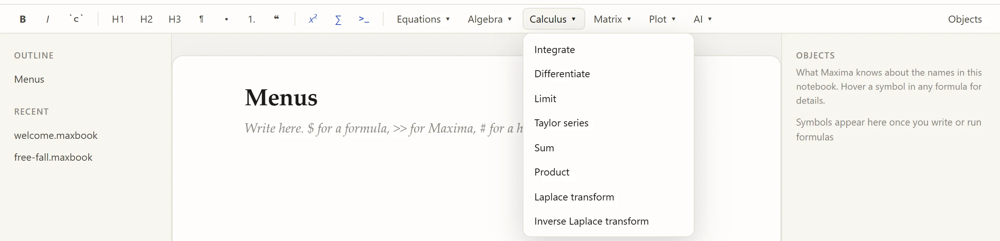
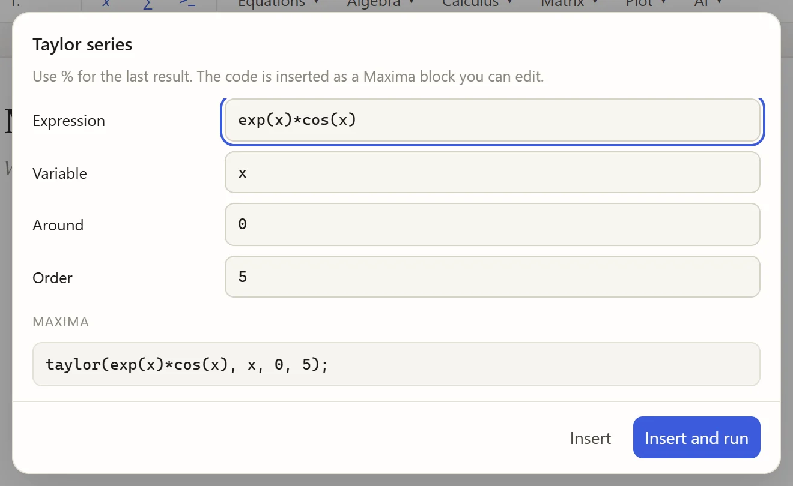
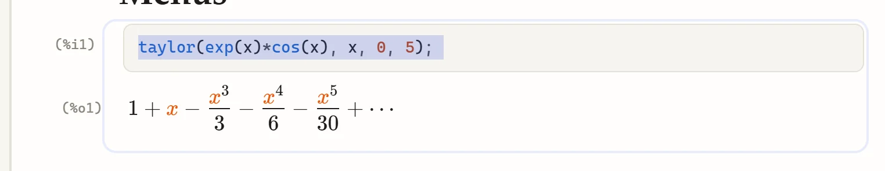
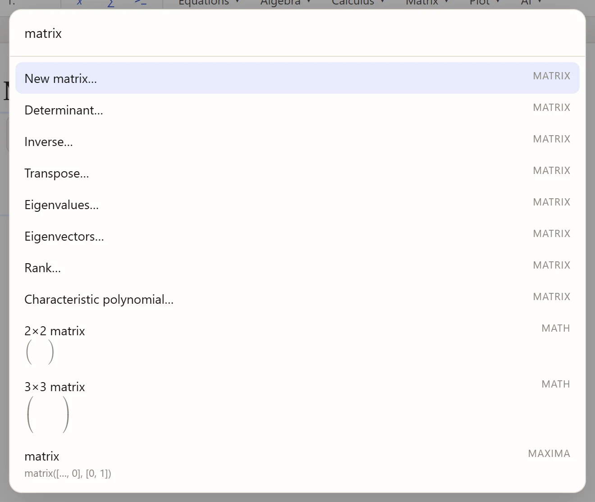

Menus and the command search
You do not need to remember Maxima’s function names and argument orders. The menus in the format bar open short forms that write the Maxima code for you, much like wxMaxima’s dialogs.
The menus

Equations |
Solve, solve numerically, linear systems, polynomial roots, ordinary differential equations with initial conditions |
Algebra |
Rational simplification, expand, factor, partial fractions, substitution, trigonometric simplification, rectangular and polar form, numerical value |
Calculus |
Integrate, differentiate, limit, Taylor series, sum, product, Laplace transform and its inverse |
Matrix |
New matrix, determinant, inverse, transpose, eigenvalues and eigenvectors, rank, characteristic polynomial |
Plot |
2D plots, parametric and implicit curves, 3D surfaces, data points |
Filling in a form
-
Choose an entry, for example Calculus › Taylor series.
-
Fill in the fields. The first is selected, ready for typing;
%(the default) means "the last result". The box at the bottom shows the Maxima code as you type:
-
Click Insert and run (or press Enter), or Insert to add the code without running it.
The code is inserted as an ordinary Maxima block after the cursor, so you can read it, change it and run it again:

If the cursor is inside a Maxima block, the code is inserted there instead.
The command search: Ctrl+K
Ctrl+K (or the magnifier at the top right) opens one search box for everything:
-
commands such as Run everything, Export…, Toggle light/dark, Edit together,
-
the menu forms (type
taylor,eigen,solve…), -
formula templates and Maxima snippets.

Use ↑ and ↓ and Enter, or click. Each entry shows its keyboard shortcut, if it has one, on the right.
Formatting text
The left part of the format bar formats text: bold (Ctrl+B), italic (Ctrl+I), code (Ctrl+`), headings 1–3 (Ctrl+Alt+1 to Ctrl+Alt+3), plain text (Ctrl+Alt+0), bulleted and numbered lists, and quotes.
Most of it also works by typing Markdown: # and a space for a heading, - or 1. for lists, > for a quote, **bold**, `code`, --- for a line.
See Keyboard shortcuts.